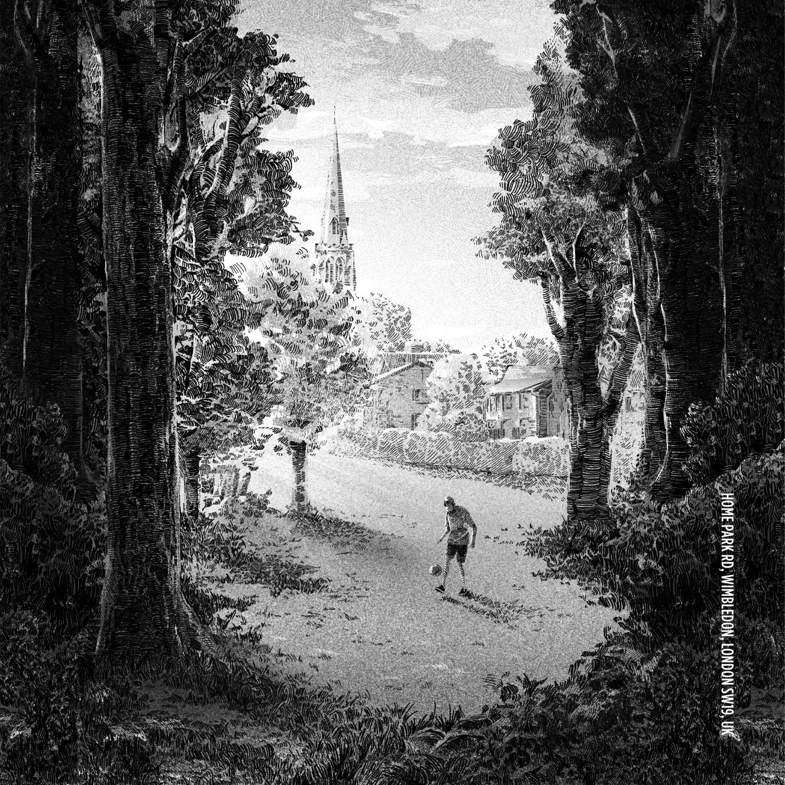
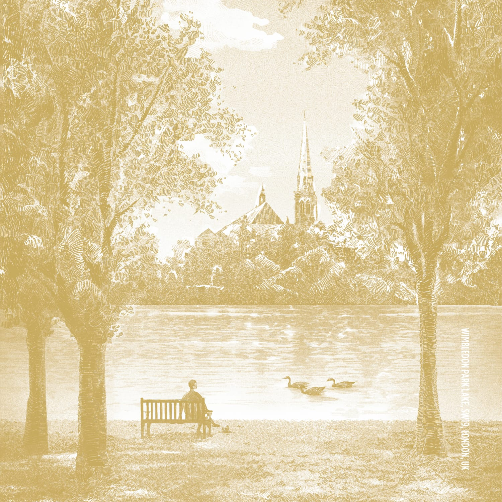
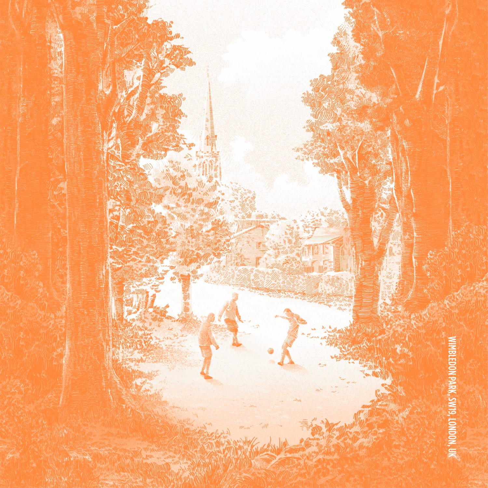
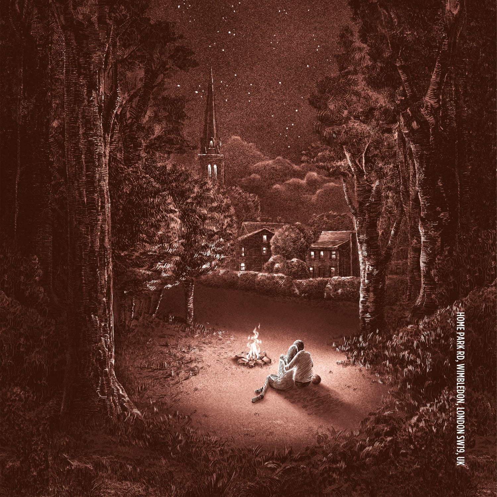

Story
A transitional scent of the green forest of
Wimbledon, London SW19
시간에 따라 변화하는 런던 윔블던 숲과 공원의 향
- The Beginning Of The Story Wimbledon Forest
-
Our fragrance brand took its name after the Wimbledon district postal code “SW19".
Wimbledon is a charming, peaceful town surrounded by green forests and parks in the southwest part of London.
As strolling through Wimbledon Park, we encounter people playing football on fresh grass in the early morning,
children giggling and playing under the warm sun, starlight twinkling as lovers whisper in the dark.
Our scents 6am, noon, 3pm, 9pm & midnight, portrays Wimbledon's transitional scents change over time. -
'SW19'은 윔블던 지역의 우편 주소로, 영국 런던의 남서쪽에 위치한 푸른 숲과 공원으로 둘러싸여진 평화롭고 아름다운 도시입니다.
윔블던 파크를 걷다 보면, 이른 아침 저 멀리 잔디 위에서 축구공을 차는 사람들의 숨소리, 따뜻한 햇살 아래 해맑게 뛰노는
꼬마들의 웃음소리, 그리고 반짝이는 별빛 아래 사랑을 속삭이는 연인들의 목소리를 만나게 됩니다.
이처럼 시간에 따라 변화하는 윔블던의 초록빛 싱그러움을 6am, Noon, 3pm, 9pm, Midnight 5가지 시간에 향수로 담았습니다.
하루의 시간, 일상 속 행복의 순간으로부터 시작된 SW19의 향을 통해 당신의 가장 빛나고 따뜻한 ‘순간’으로 떠나보세요.
Fragrance story
- 
-
- WIMBLEDON FOREST AT DAWN IN THE MIST
-
Just before the sunrise, the mist of Wimbledon forest
drifts along and greets you as you take a stroll. Feel the
6AM scent of the Wimbledon forest’s glistening morning
dew and moist soil. - 안개가 자욱한 윔블던 숲의 새벽
-
세상의 아침이 시작되기 전, 윔블던의 숲을 산책하는 당신에게
푸른 안개가 바람에 실려와 인사를 합니다. 이슬 머금은 잔디와
촉촉한 흙내음을 품은 윔블던의 새벽 6시를 느껴보세요.
-
- TOUCH OF SUNLIGHT
ON WIMBLEDON LAKE AT NOON -
Midday, when the sunlight sparkles on the surface of
the lake, the bouquet of a full bloom iris and cool aqua
scent under the tree shade fills up the air. Feel the
scent of NOON at Wimbledon Park. - 햇살에 반짝이는 윔블던 호수의 정오
-
호수에 반짝이는 햇살 찬란한 낮 12시, 서늘한 나무그늘 아래
차가운 물 향과 햇살에 만개한 아이리스 꽃 향이 어우러진
윔블던 공원의 정오를 느껴보세요.
- TOUCH OF SUNLIGHT
- 
- 
-
- GOLDEN SUN IN THE AFTERNOON
AT WIMBLEDON PARK -
While the forest’s morning dew dries away in the beaming
afternoon sunlight, feel the scent of the fully blossomed
flowers in the park come together with the freshness of lemon
floating on a cup of black tea at 3PM in Wimbledon. - 햇살이 내리쬐는 윔블던 공원의 오후
-
이슬 젖은 초록숲이 상큼한 햇살에 말라가는 윔블던의 오후.
공원에 만개한 꽃들의 향기와 홍차에 띄운 레몬 조각 향기가
어우러진 윔블던의 오후 3시를 느껴보세요.
- GOLDEN SUN IN THE AFTERNOON
-
- BONFIRE SPARKS THE EVENING
OF THE WIMBLEDON -
The night in Wimbledon forest after dark.
The whispers of love travel through the crackling bonfire.
Feel the Wimbledon’s 9PM scent of the
smokey bonfire smoothly blended with sweet vanilla. - 모닥불이 피어 오르는 윔블던 숲의 저녁
-
어둠이 내린 윔블던 숲의 저녁. 모닥불 타는 소리 사이로 들려오는
연인들의 달콤한 속삭임. 바닐라의 달콤함과 숲 속 모닥불의
스모키함이 어우러진 윔블던의 저녁 9시를 느껴보세요.
- BONFIRE SPARKS THE EVENING
- 